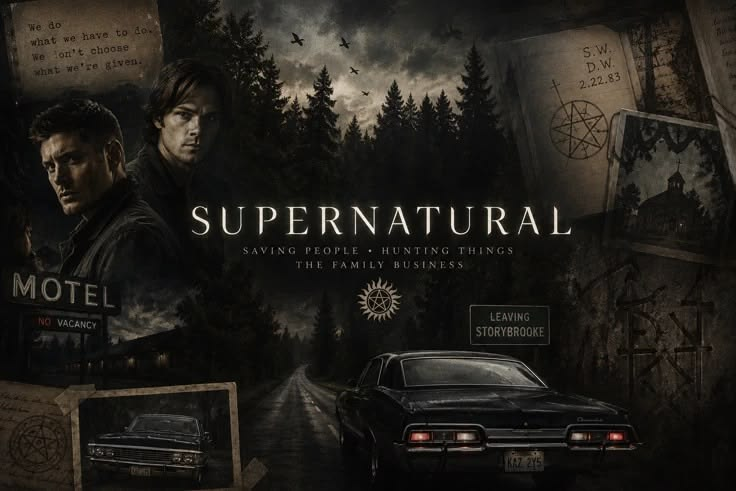

SUPERNATURAL
A série "Supernatural" segue a jornada de Sam e Dean Winchester, dois irmãos que caçam demônios, fantasmas, monstros, vampiros e outras criaturas sobrenaturais no mundo. Após a misteriosa morte de sua mãe, os irmãos se unem para enfrentar as forças do mal e seguir os passos do pai, John Winchester, que era um caçador de criaturas sobrenaturais. A série explora temas como vingança, amizade, coragem e a luta contra o mal, enquanto os Winchesters se tornam uma equipe de caçadores de criaturas sobrenaturais.

A série foi criada por Eric Kripke, que originalmente planejou a história para durar apenas 5 temporadas. O arco narrativo principal termina na 5ª temporada, mas o enorme sucesso fez a emissora continuar a produção por 15 anos. Com 15 temporadas e 327 episódios (exibida de 2005 a 2020), tornou-se a série de ficção científica/fantasia em live-action mais longa da história da televisão norte-americana. Jensen Ackles (Dean) originalmente fez teste para o papel de Sam Winchester, mas quando Jared Padalecki fez o teste, a produção achou Jensen perfeito para o estilo rebelde e carismático de Dean.